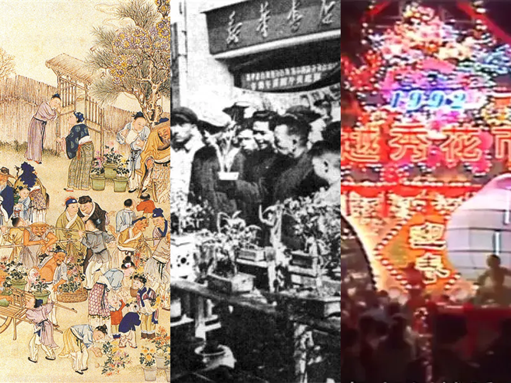

深圳花市网
深圳花市网
广府民间已经有专门栽培以供贺年的年桔。
广州城外河南（今广州市海珠区）的农民以种花为业，向城内居民售卖鲜花。
王栐《燕翼贻谋录》：“承平时，温州、鼎州、广州皆贡柑子。”
柑橘业已发展至商品生产时代，年桔在芳村、番禺、南海等地均有种植。
广州芳村的花棣（今花地）已成为花木产区，搭起一排排展卖鲜花鲜果及年宵用品的竹棚，人们称之为“花街”。
藩署前（今广东省财政厅前）出现夜间花市。
19世纪60年代渐成年宵花市，固定在春节前几天举行。当时广州城内有两个花市，一个在双门底（今北京路），另一个在西关十八甫。
行花街迎春祈福的习俗基本成形，“未行过花街不算过年” 的说法在坊间广为流传。
商家们不仅在花市中售卖花卉，还会搭配销售各种与春节相关的商品，如精美的中国结、寓意吉祥的春联、喜庆的红灯笼等，形成了一个综合性的春节购物与游乐场所。
除夕花市上，桃花、水仙、牡丹、剑兰最为普遍，当时的报刊报道，一株中等桃花可卖数银元，足以维持普通人家一个月的生活。若有上好品质的花上市，还可以运到香港卖出高价。
抗日战争时期，广州花市未有停歇。1938年的除夕，在敌机空袭警报声中，广州市民仍在挑选桃花，表达了对驱除日寇、盼望胜利的期待。
传统的除夕花市改称为迎春花市。
深圳市第一届迎春花市在新园路举行。当时花市主要是为了丰富市民和港澳台同胞及归侨的节日生活，同时宣传改革开放政策和深圳经济特区建设取得的成就。
深圳市迎春花市开始由罗湖区承办，建设路、工人文化宫、滨河东路、嘉宾路、人民南路、东门南路等地先后成为花市的举办地
经过考察，深圳迎春花市选址在爱国路，这里道路宽阔，花市铺位从原来的 200 个增加到 1000 多个。此后，爱国路成为深圳迎春花市的固定举办地，花市规模不断扩大，影响力逐年提升。
爱国路以封闭道路的形式举办迎春花市，花卉品种日益丰富，除传统花卉外，还有各种进口花卉和特色植物。
主办方采取公开拍卖的方式出售花市铺位使用权，既解决了花农争抢铺位的问题，又实现了花市举办自负盈亏，减少了财政负担。
深圳花市由“一区主办”转为“多点开花”，爱国路花市取消。
应广大群众的强烈要求，罗湖区爱国路的迎春花市分会场恢复举办。